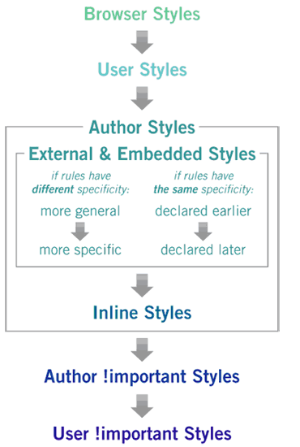

Nowoczesne Aplikacje Internetowe
Style CSS
Tadeusz Makuch
tadeusz.makuch@gft.com
Andrzej Matłosz
andrzej.matlosz@gmail.com
Materiały: https://github.com/tmakuch/UAM
Cascading Style Sheets
- Opisuje wygląd stron internetowych.
- Pozwala na rozdzielenie zawartości i wyglądu dokumentu.
- Jeden dokument może być przedstawiony na kilka sposobów.
Wykorzystanie
- Na elemencie -
- Wewnętrzne -
- Zewnętrzne -
Kaskadowanie
Identyfikatory vs klasy
- Identyfikator
- Może być wykorzystany tylko jeden raz.
- Selektor:
#id - Użycie:
#identyfikator { ... }
- Klasa
- Może być wykorzystana kilkukrotnie
- Selektor:
.className - Użycie:
.klasa1 { ... }
Dziedziczenie
Elementy dzieci dziedziczą od swojego rodzica pewne aspekty wyglądu
- Właściwości tekstu (font, line-height, text-align itd.)
- Właściwości listy (list-style, list-style-type, list-style-image itd.)
- Kolor
Zagnieżdżanie
Style pozwalają definiować relację rodzic-dziecko (niestety i na szczęście tylko w tym kierunku)
article {
font-size: 12px;
}
article header {
font-size: 18px;
}
Grupowanie
Identyczne style mogą zostać zgrupowane
h1, h2, h3, h4, h5, h6 {
color: red;
}
Pseudoklasy
Specjalne selektory pozwalające wybrać elementy na podstawie ich pozycji, stanu lub innych reguł
:first-child {}
:nth-child(2n+1) {} //nieparzyste
:nth-child(3) {} // trzeci element
:not(.klasa1) {} //negacja przekazanego selektora tu, każdy element bez klasy .klasa1
:active, :hover, :visited {} //odpowiednie stany linku
Pseudoelementy
Specjalne selektory określające pewne części elementów
:first-letter {}
:first-line {}
:before {}
:after {}
Selektory zaawansowane
- .parent > .child - bezpośrednie dzieci
- .element + .sibling-element - bezpośrednie rodzeństwo
Specifity
Zasady, które wykorzystuje przeglądarka poprzez rozwiązywania konfliktów pomiędzy dwoma stylami wskazującymi na ten sam element.
Sposób liczenia

Wybrane właściwości
- color: #000|rgba(0,0,0,1)|black;
- background-color: #fff|rgba(255,255,255,1)|white;
- background-image: url("moje_tlo.jpg");
- background: [background-color] [background-image] [background-repeat] [background-position];
- font-size: 1px|1%|1vh|1em;
- font-family: 'Times New Roman'|...;
- word-wrap: normal|break-word;
- text-align: left|center|right|justify;
- overflow: auto|scroll|hidden|visible;
float, box-shadow, text-shadow, line-height, transition, transform i wiele innych
Box Model

Box Model
- margin-top: 1px|1%|1vh
- margin: [margin-top] [margin-right] [margin-bottom] [margin-left];
- border-width: 1px|1%|1vh
- border-color: [color];
- border-style: solid|dotted|...
- border: [border-color] [border-color] [border-style]
- padding-top: 1px|1%|1vh
- padding: [padding-top] [padding-right] [padding-bottom] [padding-left]
Box Model
- width: 1px|1%|1vh
- height: 1px|1%|1vh
- box-sizing: content-box|border-box
Właściwość - display
- display: inline; - wyświetlanie w linii
- display: block; - pudełko posiadające swoje wymiary, zajmujące całą szerokość, łamiące linie
- display: inline-block; - pudełko w linii, posiada swoje wymiary, ale nie zajmuje całej szerokości
- display: flex|table|grid(?)|...
Flexbox - display:flex
- Dynamiczne pozycjonowanie elmentów
- Pozwala umieszczać jeden element po drugim
- https://css-tricks.com/snippets/css/a-guide-to-flexbox/
Właściwość - position
- position: static;
- position: relative;
- position: absolute;
- position: fixed;
Pozycjonowanie
- top: 1px|1%|1vh;
- right: 1px|1%|1vh;
- bottom: 1px|1%|1vh;
- left: 1px|1%|1vh;
- z-index: 1;
Prekompilator Less
- Superset CSSu
- Wymaga kompilacji przed umieszczeniem w przeglądarce
- Szerokie wsparcie - IDE, grunt/gulp, node
npm install -g less
lessc input.less output.css
Dlaczego nie vanilla CSS?
- Zmienne (stary argument)
- Czytelniejsze zagnieżdżanie
- Mixins
- Kompilacja CSS (tym samym możliwość mimifikacji, lepszej dokumentacji)
Zagnieżdżanie
CSS:
p .elem1 { ... }
p .elem2 { ... }
p .elem2 > .elem3 { ... }
LESS:
p {
.elem1 {
...
}
.elem2 {
...
> .elem3 {
...
}
}
}
Parent selector
.box {
:hover { ... } // .box :hover
&:hover { ... } // .box:hover
&__header { ... } // .box__header
& &__header { ... } // .box .box__header
}
.form {
.box {
& > & { ... } // .form .box > .form .box
}
}
Zmienne
@dim: 20px;
.box {
width: @dim;
height: @dim;
margin: @dim/2;
}
//result
.box {
width: 20px;
height: 20px;
margin: 10px;
}
Mixins
.red {
color:red;
}
.header {
.red();
}
//result
.red {
color:red;
}
.header {
color:red;
}
Mixins - ukrywanie
.red() {
color:red;
}
.header {
.red();
}
//result
.header {
color:red;
}
Mixins - przestrzenie nazw
.colored() {
.red {
color:red;
}
.green {
color:green;
}
}
.header {
.colored.red();
}
Mixins - funkcje
.colored(@color, @bgColor) {
color: @color;
background-color: @bgColor;
}
.header {
.colored(red, white);
}
//result
.header {
color: red;
background-color: white;
}
Mixins - funkcje i domyślne argumenty
.colored(@color: red, @bgColor: white) {
color: @color;
background-color: @bgColor;
}
.header {
.colored(green);
}
//result
.header {
color: green;
background-color: white;
}
@import
//commons/variables.less
@bgColor: gray;
//main.less
@import 'commons/variables'
body {
background: @bgColor;
}
//result
body {
background: gray;
}
Dobre praktyki - BEM
Konwencja nazywania elementów i ich składowych.
blok__skladowa--modifikator
.box {}
.box__header {}
.box--decorated {}
.form-box__section-header--important {}
Prace domowe
znajdują się w folderach code/homework1 i code/homework2, wymagają odpowiednio odwzorowania stylu stronu i stworzenia prostej aplikacji listy.
W podanych folderach znajdują się wizualizacje/dokładny opis zadania.
Termin na oddanie zadań - 30 listopada